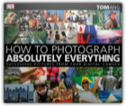
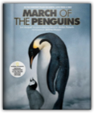

|
How to Photograph Absolutely Everything: Successful Pictures From Your Digital Camera

Tom Ang
This paperback edition of How To Photograph Absolutely Everything by renowned photographer, author, and broadcaster Tom Ang, delivers exactly what the title promises. Avoiding intimidating technical jargon, he explains the basic elements of photography - light, color, composition, and focus - then goes on to show how to make them work for you. From still lifes to children's parties, thunderstorms to sunsets, close-ups to panoramas, every photographic subject, technique, and challenge is covered. Using step-by-step photographs and instructions, Tom shows you how to take the best possible picture in any situation. Want to photograph city lights at night, animals in action, a family portrait? Tom makes it easy. Employing a user-friendly "recipe" formula, he shows you the best approach for each subject, gives expert tips on improving an image, and tells you how to set up your camera - so you really can't go wrong. Inspiring galleries at the end of each section describe alternative techniques to try for every subject. There are also tips on basic post-production, showing how to crop, improve color and contrast, and remove unwanted elements of an image. How to Photograph Absolutely Everything guarantees to make a better, more confident photographer of absolutely everyone who reads it.
March of the Penguins: Companion to the Major Motion Picture

Luc Jacquet
This winning combination of vivid photographs and informative, inspiring text is the companion volume to the extraordinary surprise hit film deemed “Irresistible” by Entertainment Weekly. Timed perfectly for the holidays and the November release of the DVD!Read the incredible, endearing story of the Emporer penguins’ yearly Antarctic odyssey and the long months of endurance, self-sacrifice and love as they raise a new generation of chicks. Savage Summit: The Life and Death of the First Women of K2
In Savage Summit, Jennifer Jordan shares the tragic, compelling, inspiring, and extraordinary true stories of a handful of courageous women — mothers and daughters, wives and lovers, poets and engineers — who defeated this formidable mountain yet ultimately perished in pursuit of their dreams. Fire

Few writers have been to so many desperate corners of the globe as has Sebastian Junger; fewer still have provided such starkly memorable evocations of characters and events. From the murderous mechanics of the diamond trade in Sierra Leone to the logic of guerrilla warfare in Afghanistan and the forensics of genocide in Kosovo, this new collection of Junger's nonfiction will take you places you wouldn't dream of going to on your own. |


My Library
Collection Total:
1320 Items
1320 Items
Last Updated:
Apr 14, 2013
Apr 14, 2013
 Made with Delicious Library
Made with Delicious Library